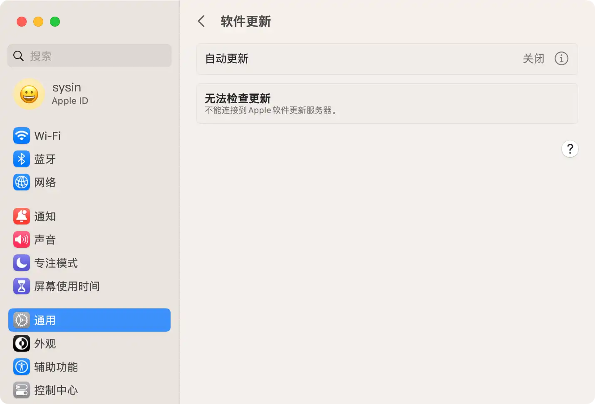
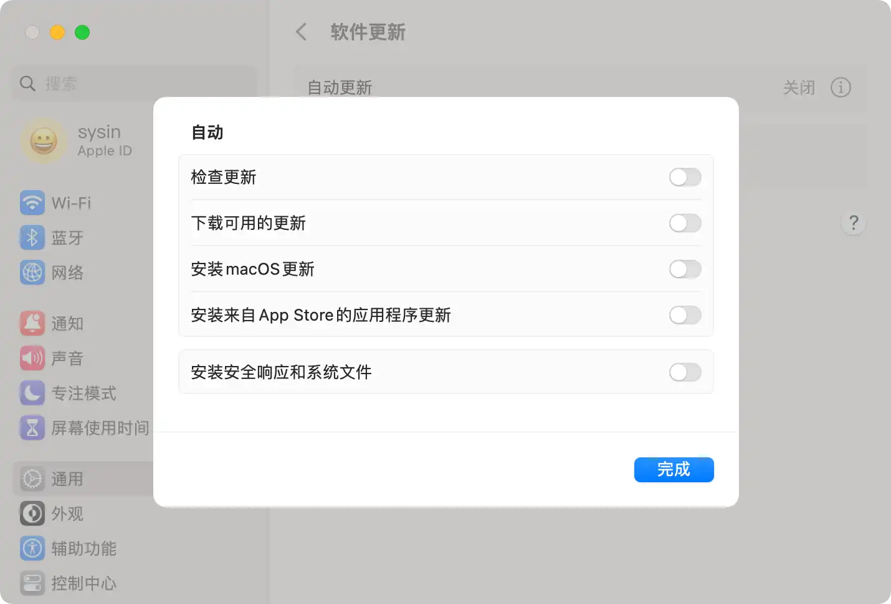
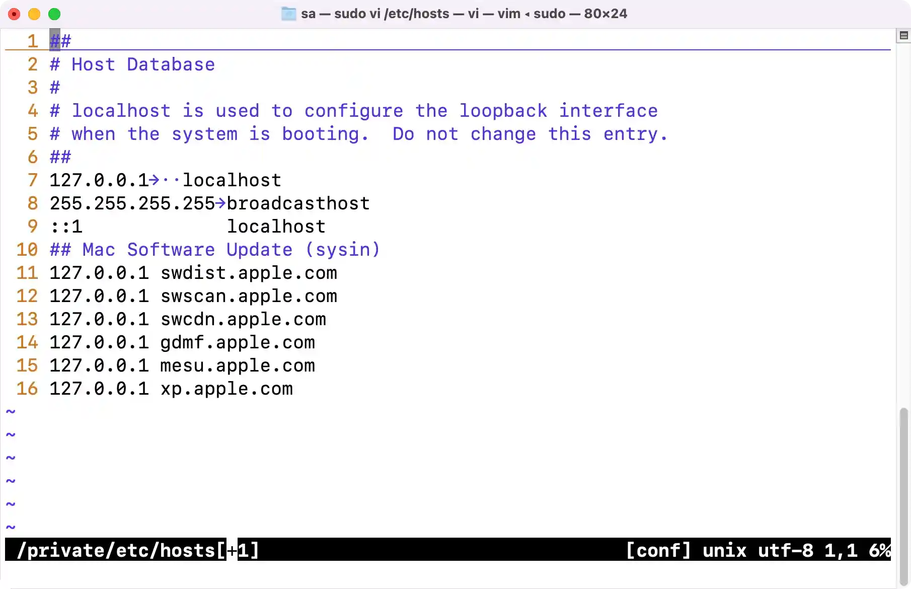
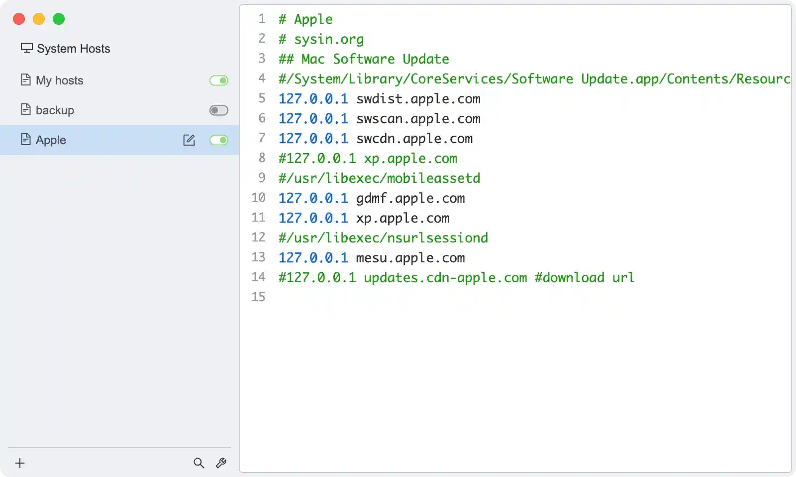

请访问原文链接：如何禁止 macOS 自动更新，去除更新标记和通知 查看最新版。原创作品，转载请保留出处。
作者主页：sysin.org
禁用 macOS 更新系列文章：
- 如何彻底禁止 macOS Sonoma 自动更新，去除更新标记和通知
- 如何彻底禁止 macOS Ventura 自动更新，去除更新标记和通知
- 如何彻底禁止 macOS Monterey 自动更新，去除更新标记和通知
- 如何彻底禁止 macOS Big Sur 自动更新，去除更新标记和通知
- 如何彻底禁止 macOS Catalina 自动更新，去除更新标记和通知
随着 macOS Ventura 13.6 的发布，macOS Ventura 的功能和性能已经大幅改善，达到了当前版本的最佳状态，Ventura 更新的使命已经完成（后续通常为安全更新），是时候屏蔽自动更新了！建议普通用户长期保持该版本直到 14.5 的发布。macOS 爱好者和开发者可以转战新版本（Sonoma）。
macOS Ventura 13.5 比较特殊，有个初级 bug，即定位服务无法授权管理，所以此次推荐的版本是 13.6。

图：屏蔽更新后的效果
如果您想快速屏蔽更新，只需要查看 “3.1 编辑 hosts 文件，添加如下内容” 此章节即可。
提示：
以下步骤不是完全必要，但是全部执行可以确保解决顽固性的更新通知角标出现。
本文针对 macOS Ventura，基本也适用于 macOS Monterey，低版本或者更新版本有限适用。
1. 取消自动更新选项
请选取苹果菜单 >> “系统设置…” >> “通用”，然后点按 “软件更新”。
取消勾选：“自动更新” 中的相关项。

2. macOS Ventura 如何进行自动更新
路径：检测 > 通知 > 下载
-
检测：进程
/System/Library/CoreServices/Software Update.app/Contents/Resources/softwareupdated访问 Apple 相关 URL 检测软件更新；要访问的域名主要如下：
swdist.apple.com
swscan.apple.com
swcdn.apple.com
xp.apple.com -
检测：进程
/usr/libexec/mobileassetd访问 Apple 相关 URL 检测软件更新（该项为 Monterey 新增）；要访问的域名主要如下：
gdmf.apple.com
xp.apple.com -
通知：进程
/System/Library/PrivateFrameworks/SoftwareUpdate.framework/Versions/A/Resources/SoftwareUpdateNotificationManager.app/Contents/MacOS/SoftwareUpdateNotificationManager负责通知，产生系统更新标记（小红点）； -
下载：进程
/usr/libexec/nsurlsessiond主要负责下载软件更新 (sysin)。要访问的域名主要如下：
mesu.apple.com
updates.cdn-apple.com
注意：以上为笔者粗略分析，具体进程执行的功能仅供参考，但屏蔽方法是有效的。
所以要屏蔽自动更新和更新标记出现，解决方案如下：
检测（屏蔽网络访问） > 通知（取消执行权限） > 下载（屏蔽网络访问）。
3. 屏蔽网络访问
3.1 编辑 hosts 文件，添加如下内容
手动编辑：打开终端，执行命令 sudo vi /etc/hosts，添加以下条目：
1 | # Mac Software Update (sysin) |

图：sudo vi /etc/hosts 添加的内容
或者使用 SwitchHosts（免费软件）。

注意：SwitchHosts 最后要空一行。
一般到此步骤即可发生作用，自动更新已经被屏蔽（下文部分可以忽略^_^）。
例外：如果使用了系统代理或者虚拟专用网，将绕过本地 DNS 设置，仅仅设置 hosts 仍然会检测到更新。
3.2 或者（或同时）使用防火墙软件屏蔽
例如 Little Snitch，这是一个商业软件。
-
新建规则 1：禁止 nsurlsessiond 出站访问
Process Name：
/usr/libexec/nsurlsessiondDeny Outgoing Connections
To: Any Server
-
新建规则 2：禁止 mobileassetd 出站访问
Process Name：
/usr/libexec/mobileassetdDeny Outgoing Connections
To: Any Serve
-
新建规则 3：禁止 softwareupdated 出站访问
Process Name：
/System/Library/CoreServices/Software Update.app/Contents/Resources/softwareupdatedDeny Outgoing Connections
To: Any Server
备注：
在 macOS Big Sur 进程为：
/System/Library/PrivateFrameworks/MobileSoftwareUpdate.framework/Support/softwareupdated在 macOS Catalina 进程为：
/System/Library/CoreServices/Software Update.app/Contents/Resources/softwareupdated但 softwareupdated 具体功能似乎有所差异。
4. 清除系统更新标记（红点 1）
4.1 临时清除系统更新标记
如果已经检测到更新，可以使用如下方法临时去除更新通知标记。
打开 “终端”，执行如下命令（可能需要重启才能生效）：
1 | defaults write com.apple.systempreferences AttentionPrefBundleIDs 0 |
如果无法去除，再执行如下命令即可（可能需要重启才能生效）：
1 | defaults delete com.apple.systempreferences AttentionPrefBundleIDs |
经过测试在 Ventura 早期版本中进行 hosts 屏蔽后再次检查软件更新，会自动清除更新标记。
但是 13.6 版本中，更加顽固，屏蔽 hosts 后可能仍然出现小红点并且上述命令执行后无效，这时需要点击安装更新（实际无法安装），或者需要重启系统，才能彻底解决。
4.2 修改权限
该步骤适用于 macOS Big Sur 和 macOS Monterey。macOS Ventura 未经严格验证，此项非必要，有兴趣可自行测试。
macOS Big Sur 相对于之前的版本，系统完整性保护进一步增强，无法在“恢复模式”下修改下述文件的权限。操作略嫌复杂，步骤如下。
-
确保 FileVault 已经禁用，在 ” >> 系统设置… >> 隐私和安全性 >> 文件保险箱” 查看确认。
macOS Ventura 似乎不默认禁用该功能（与之前的版本不同）。
-
进入恢复模式（启动到 recoveryOS），打开终端执行如下命令：
参看：关于 macOS 恢复功能：重启电脑，在黑屏的时候按住 command + R 进入恢复模式（可以按住 command + R 不放，直到 Apple logo 画面出现，即可进入恢复模式），然后点击菜单栏 “实用工具 >> 终端”。
1
2csrutil authenticated-root disable
csrutil disable -
正常重启到 macOS。
-
通过执行
mount命令查找要挂载的设备（这里定义为<DISK_PATH>）：1
2mount
/dev/disk1s5s1 on / (apfs, sealed, local, read-only, journaled)注意：这里的 / 目录的的设备名称显示
/dev/disk1s5s1，那么应该挂载的设备名称是/dev/disk1s5，s1 表示 “Snapshot 1”（APFS 快照）： -
创建一个新目录用于挂载（这里定义为
<MOUNT_PATH>）：例如：~/mount
1
mkdir -p -m777 ~/mount
-
执行挂载：
1
sudo mount -o nobrowse -t apfs <DISK_PATH> <MOUNT_PATH>
例如使用上面的值：
1
sudo mount -o nobrowse -t apfs /dev/disk1s5 ~/mount
-
在
<MOUNT_PATH>下修改文件。例如 (sysin)：
1
2cd ~/mount
sudo chmod 644 System/Library/PrivateFrameworks/SoftwareUpdate.framework/Versions/A/Resources/SoftwareUpdateNotificationManager.app/Contents/MacOS/SoftwareUpdateNotificationManager -
执行
sudo bless --folder <MOUNT_PATH>/System/Library/CoreServices --bootefi --create-snapshot。注意：将
<MOUNT_PATH>修改为实际路径如~/mount。 -
重启系统生效。
在正常启动系统后验证。
1
2ls -l /System/Library/PrivateFrameworks/SoftwareUpdate.framework/Versions/A/Resources/SoftwareUpdateNotificationManager.app/Contents/MacOS/SoftwareUpdateNotificationManager
-rw-r--r-- 1 root wheel 668960 2 26 15:05 /System/Library/PrivateFrameworks/SoftwareUpdate.framework/Versions/A/Resources/SoftwareUpdateNotificationManager.app/Contents/MacOS/SoftwareUpdateNotificationManager此时，即使不做任何屏蔽操作，可以正常检测软件更新，但不会出现更新标记（红点数字 1）！
-
开启 SIP
最后要恢复 “系统完整性保护”，进入恢复模式（启动到 recoveryOS），打开终端执行如下命令：
参看：关于 macOS 恢复功能：重启电脑，在黑屏的时候按住 command + R 进入恢复模式（可以按住 command + R 不放，直到 Apple logo 画面出现，即可进入恢复模式），然后点击菜单栏 “实用工具 >> 终端”。
1 | csrutil enable |
在当前新版本中，执行 csrutil enable 将自动配置 csrutil authenticated-root enable 即不允许从修改过的 snapshots 启动，所以需要同时执行 csrutil authenticated-root disable 否则修改无效。
重启完毕。
提示：在 macOS Catalina 中只需要在 recoveryOS 操作即可，步骤如下：
-
进入恢复模式（启动到 recoveryOS）：
重启电脑，在黑屏的时候按住 command + R 进入恢复模式（可以按住 command + R 不放，直到 apple logo 画面出现）
-
打开 “终端”（Utilities (实用工具) -> Terminal（终端））：
1
2
3
4切换到系统所在卷，默认名称是 “Macintosh HD”
cd /Volumes/Macintosh\ HD
如果修改了名称，假如系统卷名称是 Mac
cd /Volumes/Mac -
取消 SoftwareUpdateNotificationManager 可执行权限（默认权限位是 755）：
检测系统更新时该进程一直在运行，即使屏蔽了网络访问，仍然可能出现通知标记，所以修改它的可执行权限来禁止它运行。
1
chmod 644 System/Library/PrivateFrameworks/SoftwareUpdate.framework/Versions/A/Resources/SoftwareUpdateNotificationManager.app/Contents/MacOS/SoftwareUpdateNotificationManager
-
退出终端，重启电脑，操作完毕。
5. 如果需要更新
并不建议采用补丁加补丁的方式在线更新，虽然操作省事，容易导致系统卡顿，出现异常，甚至出现未知故障，可以使用完整软件包升级或者全新安装：
-
下载本站 macOS 镜像，完整安装：
-
或者取消上述第 3 条的屏蔽，访问 App Store 下载 macOS 完整软件包，下载后会自动保存在“应用程序”下面，直接安装即可。
6. 禁用 App Store 更新
6.1 取消 “自动更新”
App Store > 偏好设置…，取消勾选 “自动更新”（默认）。
6.2 清除更新标记（数字角标）
如果已经检测到更新，App Store 图标上出现红点数字，打开终端执行如下命令可以清除：
1 | defaults write com.apple.appstored.plist BadgeCount 0 |
App Store 左侧的更新条目通知也会清空。
6.3 禁用标记 App 图标（禁用数字角标）
系统偏好设置… > 通知与专注模式，通知，选择 “App Store” 取消勾选 “标记 App 图标”（也可以完全关闭该项通知）。
参考：https://developer.apple.com/documentation/devicemanagement/appstore
6.4 可选步骤（仅供参考）
上述步骤已经可以禁用更新了，以下内容是非必要的，一般忽略即可。
但是如果检测到了更新以下两处仍然会有提示（非 MAS App 不受影响）：
- Apple logo 菜单下的 App Store… 会提示有 “x项更新” （可以重复 “6.2 清除更新标记（数字角标）”）
- 打开 App Store 右侧会提示可更新的 App 列表
禁用全局 App 更新通知
编辑 hosts 文件，添加如下内容：
手动编辑：打开终端，执行命令sudo vi /etc/hosts，添加以下条目：
1 | 127.0.0.1 gsp64-ssl.ls.apple.com |
备注：以上地址为笔者实际检测地址，因网络环境差异，地址可能有所差异，如果无效请反馈。使用防火墙屏蔽进程可以彻底解决该问题。
或者使用 SwitchHosts（免费软件）。
或者（或同时）使用防火墙软件屏蔽：
例如 Little Snitch，这是一个商业软件。
-
新建规则 1：禁止下载更新相关的数据
Process Name：
/usr/libexec/nsurlsessiondDeny Outgoing Connections
App Store 更新 App 时可能需要访问以下主机：
以下是 Apple 官方提供的列表，请根据需要屏蔽。
| 主机 | 端口 | 协议 | OS | 描述 | 支持代理 |
|---|---|---|---|---|---|
| *.itunes.apple.com | 443、80 | TCP | iOS、Apple tvOS 和 macOS | 商店内容，如 App、图书和音乐 | 是 |
| *.apps.apple.com | 443 | TCP | iOS、Apple tvOS 和 macOS | 商店内容，如 App、图书和音乐 | 是 |
| *.mzstatic.com | 443 | TCP | iOS、Apple tvOS 和 macOS | 商店内容，如 App、图书和音乐 | — |
| itunes.apple.com | 443、80 | TCP | iOS、Apple tvOS 和 macOS | 是 | |
| ppq.apple.com | 443 | TCP | iOS、Apple tvOS 和 macOS | 企业 App 验证 | — |
禁用单个 App 更新通知
打开 Finder（访达），浏览到侧边栏 Applications（应用程序），找到不需要更新的 App，点击右键 “显示包内容”，此时出现 Content 文件夹，展开该文件夹，可以看到下面有个 _MASReceipt 文件夹，下面有个 receipt 文件。将 receipt 文件内容清空或者直接将 _MASReceipt 文件夹删除，即可禁用该 App 自动检测 App Store 软件更新（有限支持）。
在终端中执行的示例，这里以微信（WeChat）为例：
- 清空 receipt 文件内容：
echo '' > /Applications/WeChat.app/Contents/_MASReceipt/receipt - 或者删除 _MASReceipt 文件夹：
rm -rf /Applications/WeChat.app/Contents/_MASReceipt/
附录
相关文章：
- 如何屏蔽 iOS 软件自动更新，去除更新通知和标记
- 如何禁止 macOS 自动更新，去除更新标记和通知
- 如何禁止 Ubuntu 22.04 自动更新，删除更新提示和缓存
- 如何禁用 Firefox 自动更新 (macOS, Linux, Windows)
- 如何禁用 Google Chrome 自动更新 (macOS, Linux, Windows)
- 如何禁用 Microsoft Edge 自动更新 (Windows, Linux, macOS)

文章用于推荐和分享优秀的软件产品及其相关技术，所有软件默认提供官方原版（免费版或试用版），免费分享。对于部分产品笔者加入了自己的理解和分析，方便学习和研究使用。任何内容若侵犯了您的版权，请联系作者删除。如果您喜欢这篇文章或者觉得它对您有所帮助，或者发现有不当之处，欢迎您发表评论，也欢迎您分享这个网站，或者赞赏一下作者，谢谢！
 支付宝赞赏
支付宝赞赏
 微信赞赏
微信赞赏
赞赏一下